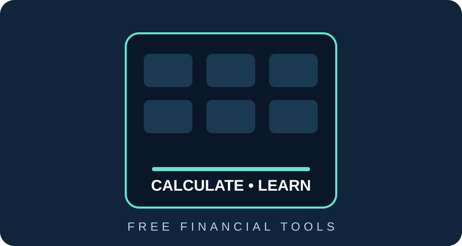

Learn by calculating.
Practical, browser-based calculators for exploring crypto, forex and everyday financial concepts. No account, payment or live market feed required.

Crypto profit or loss
Estimate the result of buying an asset and later selling it, including an estimated fee on each side.
Position size calculator
Estimate size from account risk, stop distance and pip value per standard lot in your account currency.
Pip values vary by pair and account currency. Verify the value with your broker.
Forex pip calculator
Estimate the pip movement and an illustrative profit or loss using your account-currency pip value. Enter the pip size and pip value supplied by your broker for the pair you are studying.
This is an estimate, not a live quote. Pip size and pip value depend on the currency pair, position and account currency. Confirm both with your broker.
Explore XM
If you are researching forex brokers, review the provider’s legal entity, regulation, fees, leverage, withdrawal terms and whether it accepts clients in your country before signing up.
Visit XM website ↗Affiliate disclosure: We may earn a commission if you register through this link, at no extra cost to you. Trading is risky; these calculators are educational, not trading advice.
Percentage calculator
Find a percentage of any amount.
Compound growth estimator
Model an initial amount and regular monthly contributions at a constant assumed annual rate.
A mathematical illustration, not a forecast. Real returns vary and may be negative.
Average purchase price
Calculate the average unit cost across multiple purchases, before fees.
Transaction fee calculator
Estimate a percentage-based fee and the amount remaining after the fee.
Drawdown and recovery
See the percentage loss from a peak and the gain required to return to that peak.
Risk-to-reward calculator
Compare planned risk with a potential target. This does not predict whether a trade will succeed.
Margin requirement estimator
Estimate the margin required for a position using notional value and leverage. This simplified model excludes broker-specific rules.